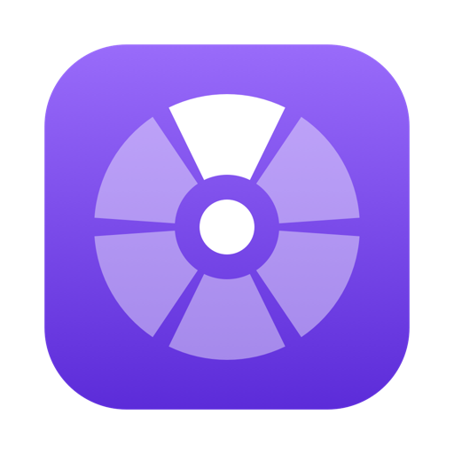
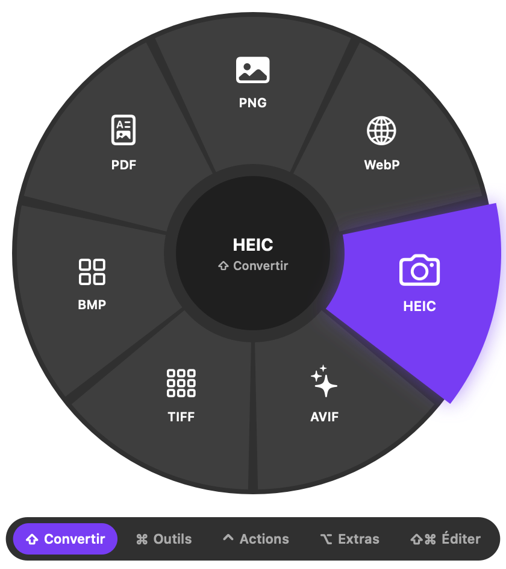
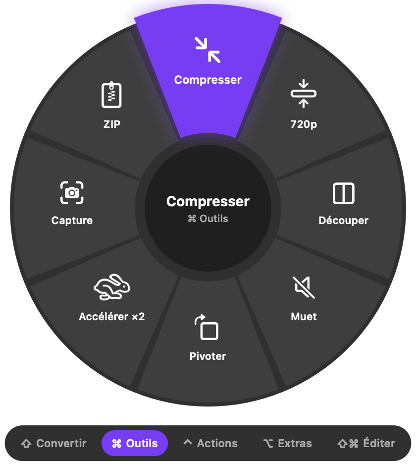
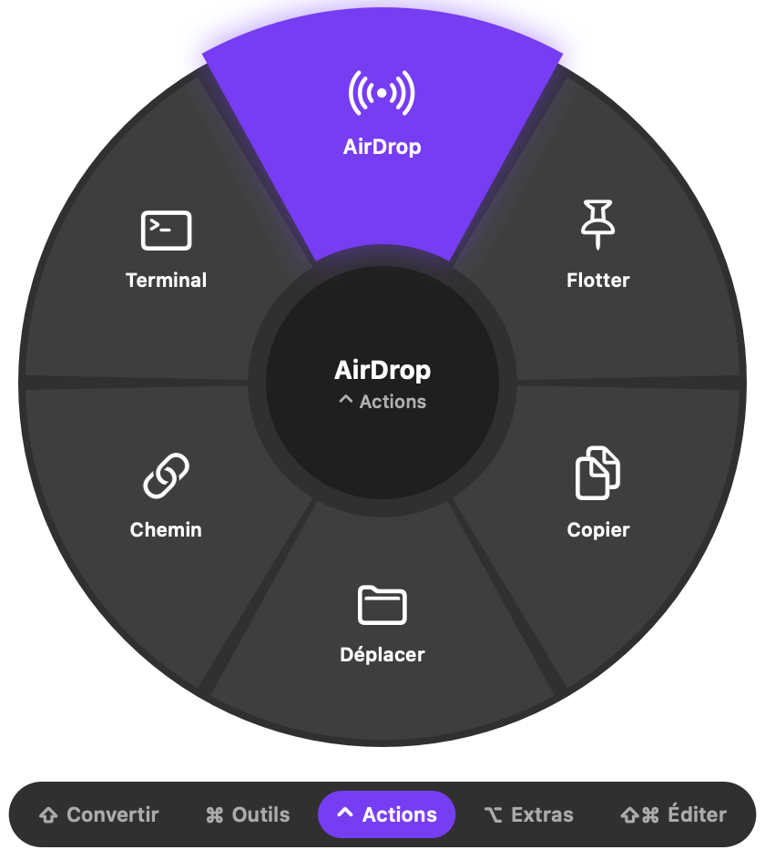
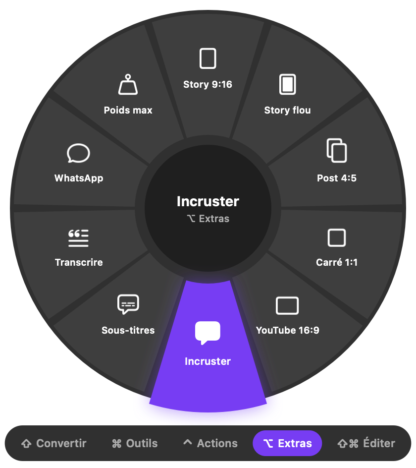
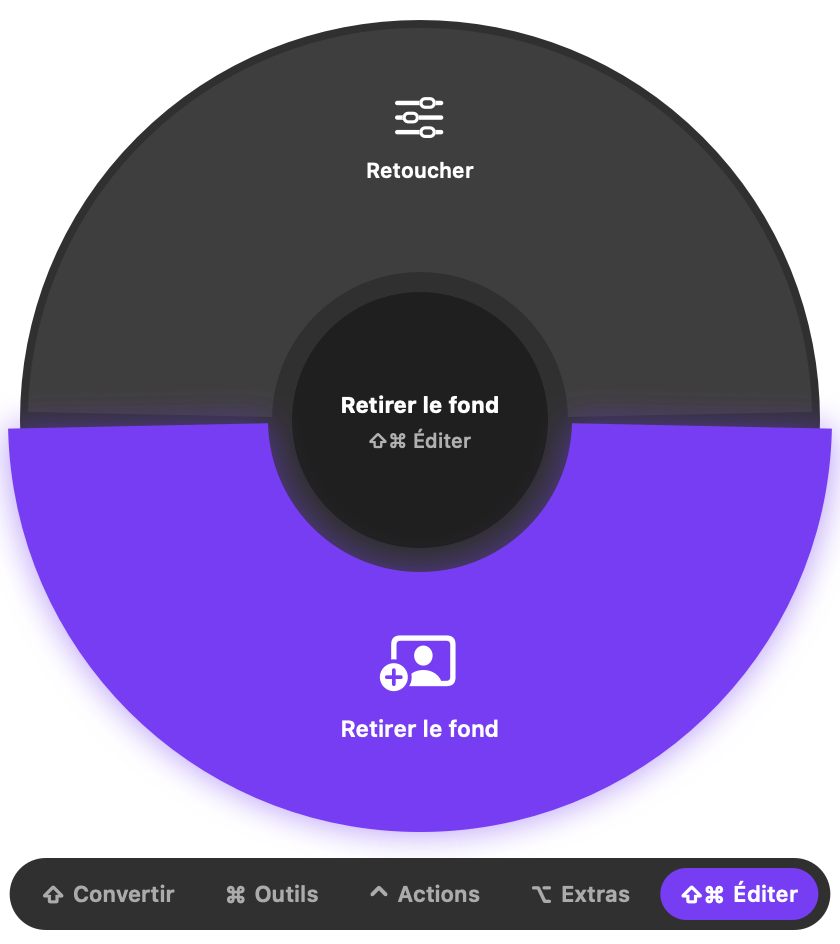
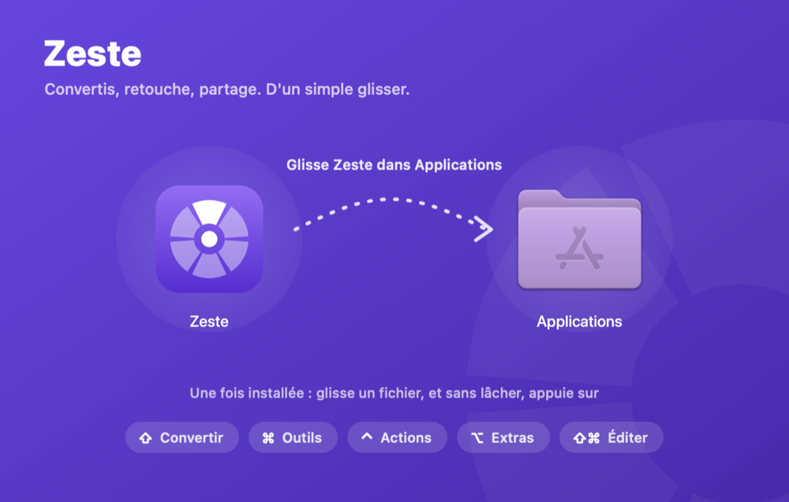

ZesteZeste convertit, compresse, retouche et sous-titre tes images, vidéos, sons et documents. Glisse un fichier, appuie sur une touche, dépose-le sur la roue. C'est tout.
Télécharger pour Mac Voir le code →
Depuis le Finder, le Bureau, Mail… un ou plusieurs à la fois.
Sans lâcher : ⇧ pour convertir, ⌘ pour les outils, ⌃ ⌥ ⇧⌘ pour le reste. La roue apparaît sous ton curseur.
Le nouveau fichier apparaît à côté de l'original. L'original n'est jamais modifié.
Chaque roue ne propose que ce qui a du sens pour le fichier glissé. Passe de l'une à l'autre en changeant de touche, ou en survolant ses onglets.
Plus de 100 conversions, sans site douteux ni envoi en ligne.

Les petites retouches du quotidien, en un geste.

Agir sur le fichier sans le convertir.

Pour publier plus vite.

Une vraie fenêtre d'édition, quand il faut aller plus loin.
Conversions, sous-titres, détourage : tout est calculé sur ton ordinateur, même sans connexion.
Une icône dans la barre des menus, aucune fenêtre à gérer. La roue n'apparaît que quand tu en as besoin.
Neuf couleurs, touches personnalisables, petits clics et retour haptique au survol.
Sélectionne un fichier dans le Finder et fais ⌃⌥Espace, puis flèches, Tab et Entrée.
Zeste peut ouvrir tes apps de fond (VPN, dictée…) cachées au démarrage, sans fenêtre à fermer.
Signée avec un certificat Developer ID et notarisée par Apple. Le code est public sur GitHub.
Zeste.dmg, environ 25 Mo.
Ouvre le fichier téléchargé, puis glisse l'icône sur le dossier Applications.
macOS demande une confirmation la première fois, comme pour toute app téléchargée : clique sur Ouvrir.

Oui, sans publicité ni compte. Le code est sous licence MIT.
Un Mac avec puce Apple (M1 ou plus récent) et macOS 14 Sonoma ou plus récent.
Uniquement quand une fonction en a besoin : piloter Pages, Keynote ou Numbers pour convertir des documents, la reconnaissance vocale pour les sous-titres. Tout reste sur ton Mac.
Elle est peut-être cachée par l'encoche de l'écran. Rouvre Zeste depuis Spotlight : la fenêtre des réglages s'affiche.
La reconnaissance vocale d'Apple est bonne, mais relis toujours avant de publier, surtout les noms propres.